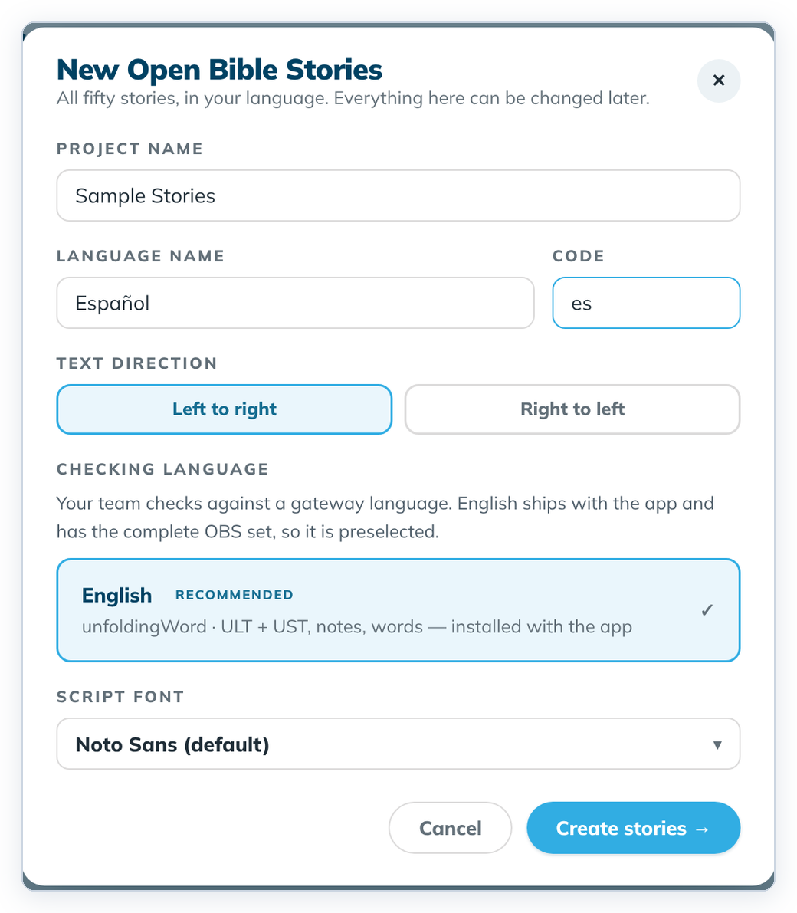
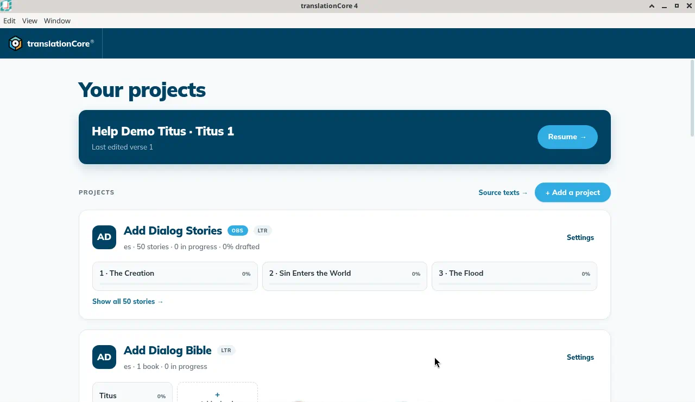
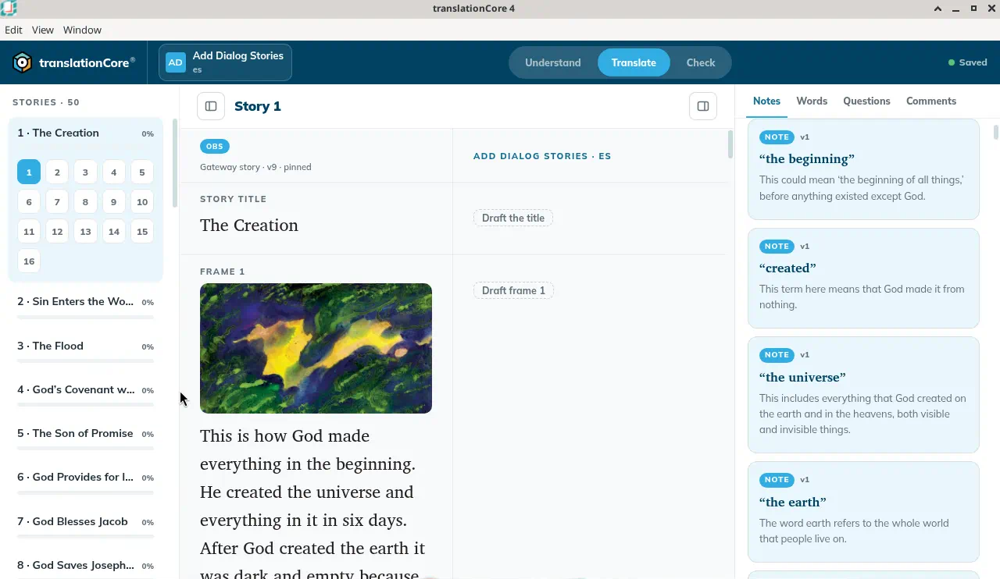

Start an Open Bible Stories project
Create a project for translating all fifty Open Bible Stories into your language.
Where in the app: Home › + Add a project › New Open Bible Stories
What it is
Open Bible Stories (OBS) is a set of 50 short Bible stories, each told in numbered frames with a picture. A stories project in tC4 holds your translation of all 50.
When to use it
When your team translates OBS, for example as a first project before Scripture.
Step by step
- On Home, click + Add a project.
- In the Add a project dialog, click the second card, New Open Bible Stories. The New Open Bible Stories dialog opens in its place.
- Type a Project name (for example "Help Demo Stories").
- Type the Language name and its Code.
- Choose the Text direction.
- Leave the Checking language on English unless you have another complete OBS set.
- Keep the Script font on "Noto Sans (default)", or pick another.
- Click Create stories →.
- On Home, click a story tile on the new card to open it. With no remembered place, the story opened in Understand. After you have used Translate, opening it again returns there.
What you should see
- The dialog New Open Bible Stories says "All fifty stories, in your language. Everything here can be changed later."
- Fields: Project name, Language name, Code, Text direction (Left to right / Right to left), Checking language (English preselected, with a RECOMMENDED badge) and Script font (starting on Noto Sans (default)).
- After Create stories → you are back on Home. The new card shows the OBS badge and "50 stories" with three story tiles.
Screenshots

Screenshot comingThe New Open Bible Stories dialog, opened from the Add a project dialog, with Cancel and Create stories → at the bottom
img/obs-create-1.png
Screenshot comingHome with the new stories project card (Add Dialog Stories) and its OBS badge
img/obs-create-2.png
Screenshot comingOlder shot: story 1 opened in Translate. On 2026-10-02 a new stories project with no remembered place opened in Understand.
img/obs-create-3.pngTips
- Keyboard: in the Add a project dialog, press Tab until the New Open Bible Stories card has a blue ring, then press Enter or Space. Esc closes the dialog.
- The New Open Bible Stories dialog has no back button. To choose another kind of project, click Cancel, then + Add a project again. It opens on the three cards.
- "English ships with the app and has the complete OBS set, so it is preselected."
- Known issue: Your first click in the dialog can scroll it and take the cursor out of the field, so the first letters you type are lost. Click the field again and check what you typed.
- The dialog says everything can be changed later. The name and language still cannot. Text direction, script font, and Checking language can be changed afterwards in Project settings.
Known limits
- The project does not open by itself after you create it. Open a story from its card.
- Creating OBS projects on Windows had a reported problem (issue #402, open).